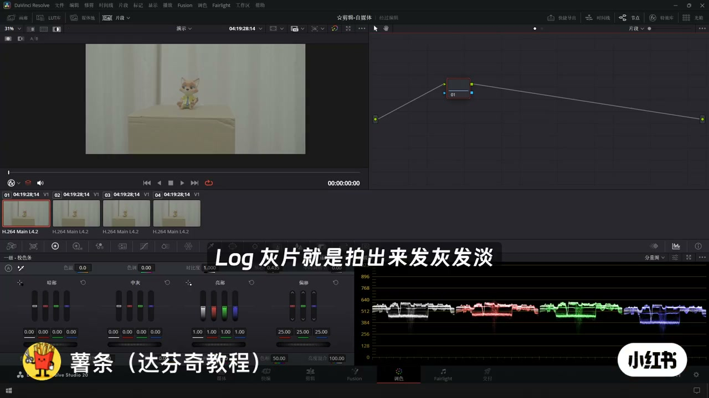
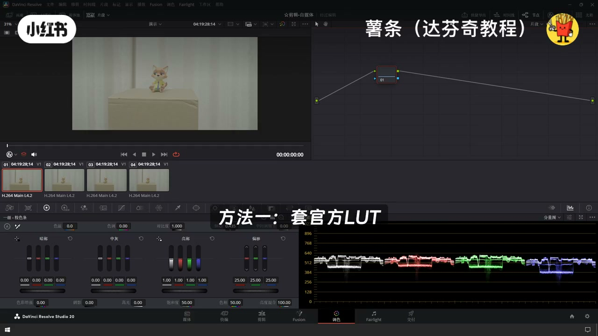
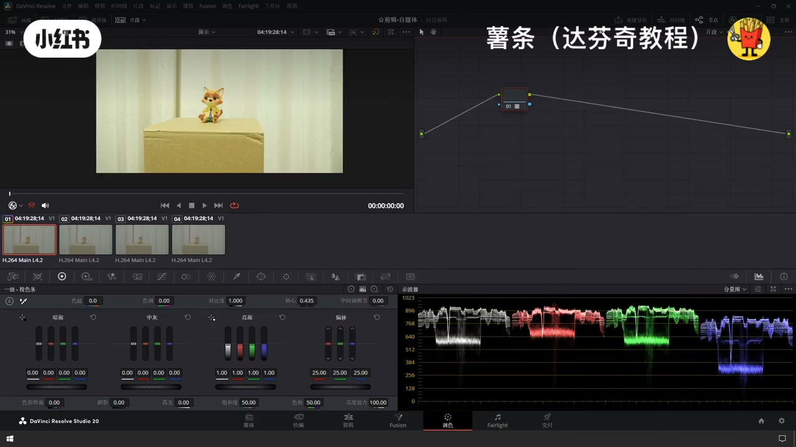
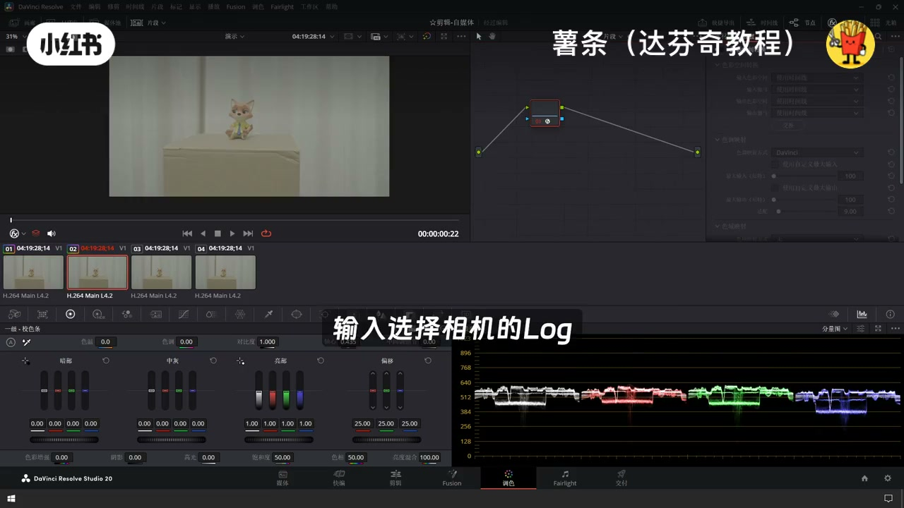
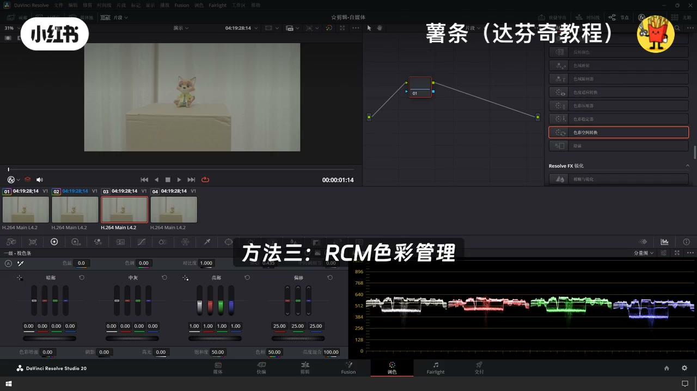
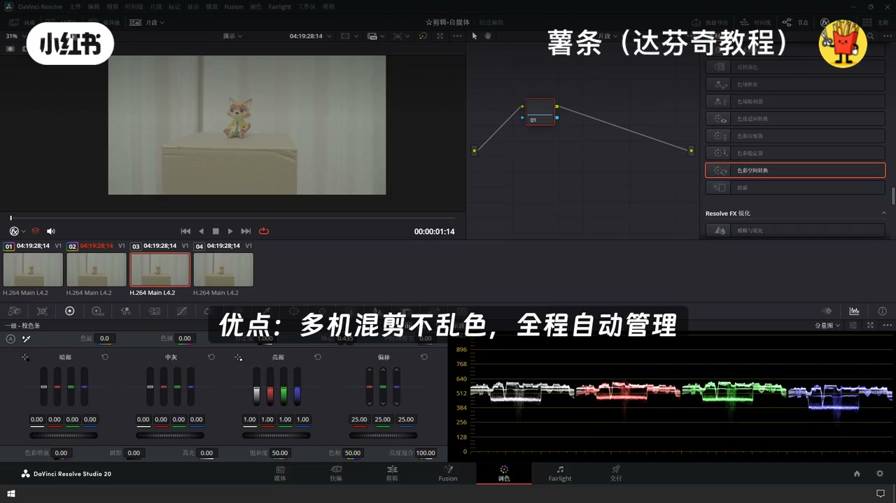
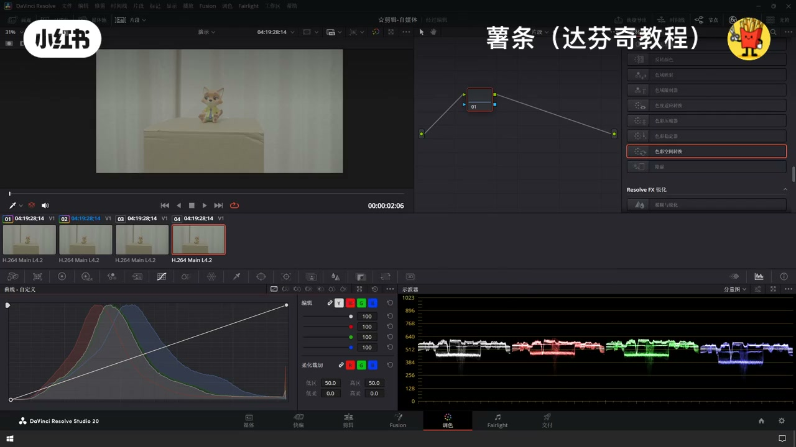
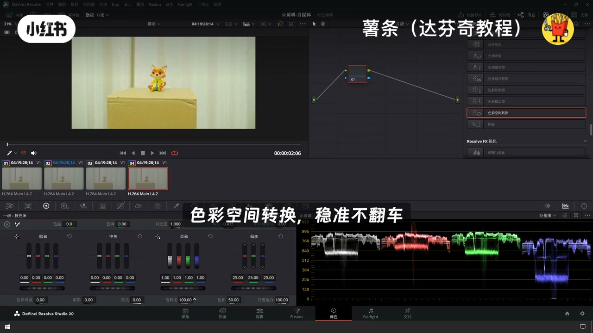

内容要点
「达芬奇灰片还原 达芬奇灰片 达芬奇灰片还原」教程要点：log灰片还原的几种方法和最佳方式 → log灰片就是拍出来发灰发淡对比度低的素材 → 目的是保留更多细节,方便后期调色 → 介绍四种达芬奇里面不同的还原方式…
知识结构
log灰片还原的几种方法和最佳方式
方法二,色彩空间转换,特效库搜
缺点,设置稍微麻烦一丢丢
- log灰片还原的几种方法和最佳方式
- log灰片就是拍出来发灰发淡对比度低的素材
- 目的是保留更多细节,方便后期调色
- 介绍四种达芬奇里面不同的还原方式
- 方法一,套官方LUT,安装完官方还原LUT后
log灰片还原的几种方法和最佳方式
00:00–00:26log灰片还原的几种方法和最佳方式
log灰片还原的几种方法和最佳方式；log灰片就是拍出来发灰发淡对比度低的素材；目的是保留更多细节,方便后期调色；介绍四种达芬奇里面不同的还原方式；方法一,套官方LUT,安装完官方还原LUT后；在LUT库里面找到,直接拖动到素材上就可以使用；优点,一秒还原,新手最省心；缺点,细节容易被压,可能色彩断层偏色


00:27–00:52方法二,色彩空间转换,特效库搜
方法二,色彩空间转换,特效库搜；色彩空间转换,拖到节点上；输入选拟相机的Log,输出选REC709；优点,不断层,不偏色,细节保留最好,兼容性强；方法三,RCM色彩管理,打开项目设置；达芬奇色彩管理,切换到达芬奇色彩科学；再点击片段修改输入色彩空间；优点,多机混件不乱色,全程自动管理


00:53–01:14缺点,设置稍微麻烦一丢丢
缺点,设置稍微麻烦一丢丢；方法四,手动还原,用RGB曲线加色轮；拉对比提饱和；优点,想怎么调就怎么调；缺点,容易翻车,不建议新手用；新手快速出片,选择色彩空间转换；稳准不翻车；多相机混件,专业成片,选择RCM色彩管理




口述/画面要点（24段）
结合 Whisper medium 与画面大字整理；专有名词已校对。
log灰片还原的几种方法和最佳方式
log灰片就是拍出来发灰发淡对比度低的素材
目的是保留更多细节,方便后期调色
介绍四种达芬奇里面不同的还原方式
方法一,套官方LUT,安装完官方还原LUT后
在LUT库里面找到,直接拖动到素材上就可以使用
优点,一秒还原,新手最省心
缺点,细节容易被压,可能色彩断层偏色
方法二,色彩空间转换,特效库搜
色彩空间转换,拖到节点上
输入选拟相机的Log,输出选REC709
优点,不断层,不偏色,细节保留最好,兼容性强
方法三,RCM色彩管理,打开项目设置
达芬奇色彩管理,切换到达芬奇色彩科学
再点击片段修改输入色彩空间
优点,多机混件不乱色,全程自动管理
缺点,设置稍微麻烦一丢丢
方法四,手动还原,用RGB曲线加色轮
拉对比提饱和
优点,想怎么调就怎么调
缺点,容易翻车,不建议新手用
新手快速出片,选择色彩空间转换
稳准不翻车
多相机混件,专业成片,选择RCM色彩管理